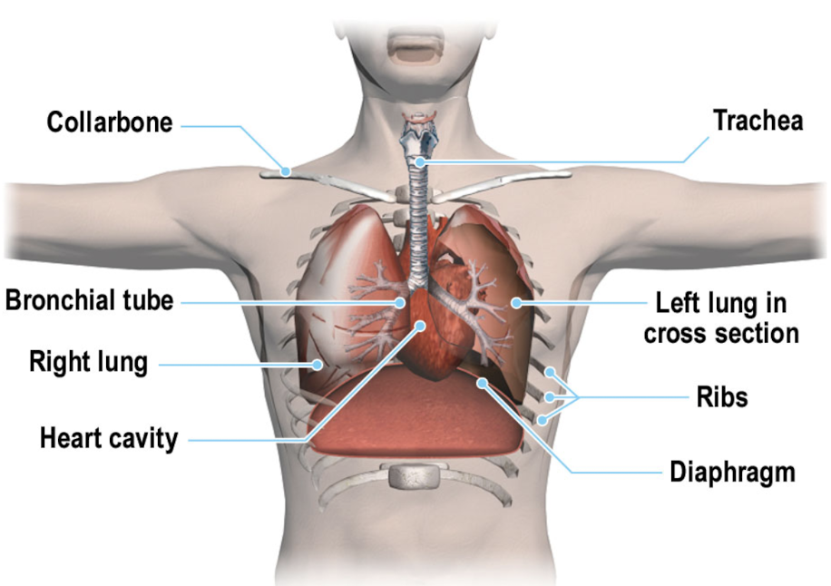
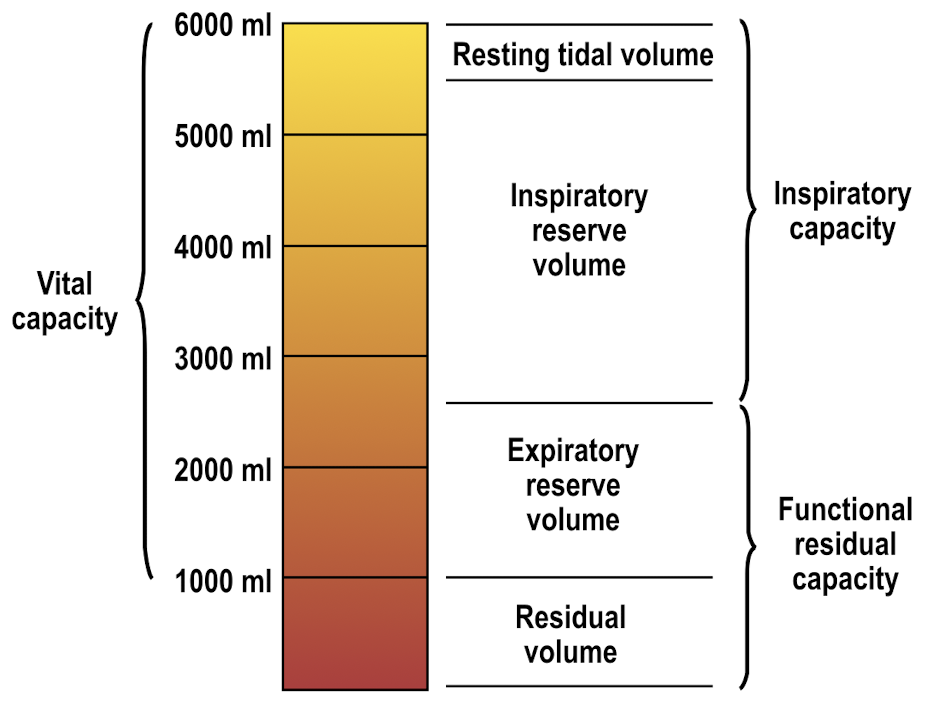
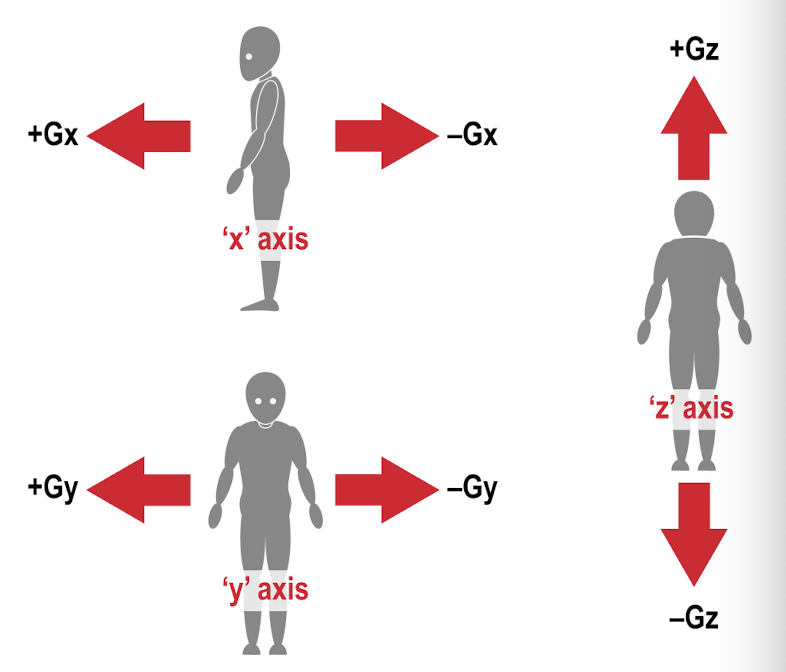

6 Human Performance
Aviation is one of the safest form of mass transport.
About 50 accidents around the world each year.
IATA 2014: 1 accident per 1 million movements.
Accidents trends show a slow but steady decrease in the number of accidents and fatalities.
ICAO’s primary indicator of safety in the global air transport sector is the accident rate based on the scheduled commercial operations involving aircraft having a MTOW above 5700kg.
## Human Error
“pilot error’ a (historical) cause for accidents.
Modern investigations are less ready to accept that any one individual can be blamed for an accident which occurs as a result of a long chain of circumstances.
==> one link in the chain <====> many contributing factors (next to human error)
pilot/aircraft commander has the overall responsibility ofr the flight.
Human error encompasses errors by regulators, managers, engineers, pilots, … in fact any person involved in aviation.
studies show(ed) that 70-75% of accidents were caused by human errors (1940). Later studies (1970) indicated the proportion had remained substantially unchanged over the intervening decades.
6.0.1 Factors contributing to Accidents caused by Human Error
long term study - 3 broad and overlapping categories
- pre-deposition ofthe individual
- enabling factors
- immediate casue of the accident
6.0.2 propoer safety culture
Uttal’s (1963) definition of safety culture captures most of its essentials:
Shared values (what is important) and beliefts (how things work) that interact with an orgainsations sturcutes and control systems to produce behaviourla norms (the ways we do things around here)
Safety culture
–> something an organisations is (beliefs, attitudes, and vaules of its members regarding the pursuit of safety)
–> something that an organisation has (the structures, practices, controls and policies designed to enhance safety)
Both are essential for achieving an effective safety culture.
However, it is accepted that the latter is easier t manipulate than the former.
It is hard to change the attitudes and beliefs (or adults by direct methods of persuasion)
A safety culture is a product of organisational, professional, and national cultures.
Therefore a safety culture may be positive, negative,m or neutral, depending on the differences in the vaulues of the three elements above.
Social psychologists have attempted to classify national cultures in terms of coellective traites they display. The most well known being the four dimensions as proposed by Geert HOFSTEDE
relevant to aviation:
- nature of relations between subordinates and superiors
- how often subordinates are afraid to express disagreement
6.0.3 ICAO
ICAO –> publishes SARPs designed to promote common approach to aviation safety.
The aim it to achieve an open culture where knowledge should be spread freely and its growth should come from developing, altering, or enriching already existing systems, procedures, and equirment on the basis of sharing and collaboration, without being rerstrictited by inappropriate rules or procedures.
The consequense is that all personas involved should have equal access to information and all the work torwards the same goal which - in aviation - is safe operation. This is the opposite of a closed culture where communication is poor to non-existtent, almost secretive, and the sharing of ideas and aspirations does not happen.
6.0.4 Organisational Accidents
nature of individual accidents has remained largely unchanged over the years.
Organisational accidents are the product of technologgical innovations that have radically altered the relatioship between systems and their human elements.
Most critical distinctin between individual and organisational accidents lies in the quantitiy, quality, and variety of the defences, barrierts, and safeguards that protect people and assets from the local operational hazards.
swiss cheese model (Dr James REASON) ~ causes of organisational accidents
Defences are intervening between the local hazards and potential losses.
Each slice of cheese represents one layer of defence. In an ideal worldm, all of these layers would be intact. In reality, however, each layer has holes or gaps.
Gaps created by
- active failures - the errors and violations of those at the human system interface
- latent conditions ariging from the failure of designers, builders, managers, and maintainers to anticipate all possible scenarios.
Safety culture consists of five elements:
- an informed culture
- a reporting culture
- a learning culture
- a just culture
- a flexible culture
6.0.5 Safety Management Systems (SMS)
To embed safety culture in an organisation: SMS.
ICAO Annex 19 (2013): SMS = SARP
SMS is a systematic approach to managing safety within an organisation, including the necessary organisational structures, accountabilities, policies, and procedures.
At the core of a SMS = robust risk management process, identifying hazards and assess and mitigate the risk.
some residual risk will maintain.
four components of a SMS
- safety policy and objectives
- safety risk management
- safety assurance
- safety promotion
6.0.6 Threat and Error Management
ICAO Annex 1 (personell licensing) requires pilots to be able to recognise and manage threats and errors.
Threats are events or errors that occur beyound the influence of an operational person.
An error is an action or inaction by an oeprational person that leads to deviations from the organisational or operational person’s intentions or expectations.
TEM is the process of detectin and responding to threats and errors with countermeasures that reduce or eliminate the consequences of errors and mitigate the probabliity of further errors or undesired aircraft states.
6.1 Respiration, Hypoxia, and Acceleration

breathing - use of muscles and diaphragm to draw air into the lungs and subsequently expel it.
inside the lungs, oxygen is transferred into the bloodsteam and carbon dioxide is removed.
Circulatory system carries the gases in the blood to and from the tissue.
respiratory system
–> trachae (windpipe) branches into the bronchial tubes –> bronchial tubes branches further getting smaller each time
–> air distributed throughout the lungs
Normal breathing: inhalation - ribs/muscles between ribs, intercostal muscles, and the diagphragm expand the chest cavity and draw air into the lungs.
shallow breathing: predominantly diaphragm
exhalation - intercostal muscles and diaphragm relax
external respiration at rest: 12-16 times a minute
6.1.1 Gas Transfer
gas molecules flow from area of high concentration to areas of low concentration.
Oxygen \(O_2\) melecules pass through the cell walls into the blood where they combine with heamaglobin molecules in the red blood cells or corpuscles to form oxyhaemoglobin molecules with give blood its red colour.
The more oxygen there is in the lungs, the more oxyhaemoglobin there will be in the blood.
Oxygen is carried to the muscle tissues where it is metabolised with sugards carried in the blood to proide energy for fhe body.
The wase products from the chemical reaction between oxygen and carbohudrates are carbon dioxide CO2 and water H2).
The metabolism of oxygen with carbohudrates in the cells is called internal respiration.
Waste carbon dioxide molecules are carried from the tissues of the body dissolved in the colourless blood plasma as carbonic acis H2CO3.
The plasma transports the carbon dioxide to the lungs where it is passed out to the atmosphere through the walls of the alveoli.
Waste water from the process of metabolism is also carried in the blood. Some of the water is used by the body’s cooling mechanism and lost as perspiration and the remaining excess water is removed from the blood by the kidneys and passed out of the body as urine.
The rate of breathing is controlled by both the amount of oxygen in the body and by the amount of carbon dioxide waste product. But the CO2 concentration is more significant.
Excess carbon dioxide in the blood reacts with the nervous system to increase the rate of inhalation and exhalation.
NOTE:
- oxygen is carried in the red blood cells
- carbon dioxide is dissolved in the blood plasma
- CO2 changes are more significant in controlling breating rate than changes in O2
6.1.2 Lung capacity

total lung capacity (~ 6000ml) = vital capacity and the residula volume
vital capacity is the difference between the capacity of the lungs after maximum inhalation and the capacity remaining after maximum exhalation, approximately 5000ml.
The volume remaining after maximum exhalation is the residual volume; approx. 1000ml.
total lung capacity = inspiratory capacity + functional residual capacity
inspiratory capacity = resting tidal volume and the inspiratory reserve volume
The resting tidal volume is the volume of air going in and out of the lungs during normal respiration. When working the body demands more oxygen and breathing increases in rate and depth. The additional volume or air inhaled when the body is working is referred to as the inspiratory reserve volume.
The functional residual capacity is the volume of air in the lungs when the body is at rest and normal expiration has occurred. This comprises the expiratory researve volume (which can be pushed out with maximum active contraction o fthe expiratory muscles) and the residual volume, which always remain in the lungs.
The tidal volume is about 0.5 litre at rest.
6.1.3 The Hazard of Carbon Monoxide
CO is created when incomplete combustion takes place in a confined space.
Unfortunately, carbon monoxide \(CO\) bonds with haemoglobin, which carried oxygen though the blood, over 200 times more effectively than oxygen to form carboxyhaemoglobin.
This means that anyone breathing carbon monoxide would not take in adequate oxygen and also would not get the automatic reaction of increased rate and depth of breating caused by a build-up of \(CO_2\).
Carbon monoxide poisoning is insidious, rapidly leading to a loss of consciousness and death.
Symptoms of carbon monoxide poisoning include headache, weakness, nausea, muscle pain and dizziness.
In many respects the symptoms are “flu like”, although high temperature is not one of them!
You may have heard of “cherry red” lips or skin as a symptom.
Acutally this is very rare and even then only seen when the person has died from Carbon monoxide poisoning already.
When the level of exposure is high, Carbon Monoxide can have a severe effect on abilities in a short period of time.
6.1.4 Carbon Monoxide Alarms
if aircraft is fitted with carbon monoxide alarm or if symptoms of carbon monoxide are suspected, there are immediate measures that can be taken (dependent on type of aircraft).
These include:
- put on oxygen masks (if available)
- switch off cabin heating, especially if it is fed from bleed air
- open the fresh air vents (if possible)
- avoid smoking
- consider landing as soon as possible or diverting if symptoms persist
Carbon monoxide poisoning is treated by providing the casuality with 100% oxygen. It can take several days to recuperatre fully from carbon monoxide poisoning.
6.1.5 Hypoxia
Hypoxia - sometimes called anoxia - occurs when the body is short of haemoglobin oxygen saturation.
Strictly the term hypoxia is a reduction in oxygen supply, while anoxia is a total absence of oxygen syppply to an organ’s tissues.
The amount of oxyhaemoglobin in the blood depends not on the percentage of oxygen in the air, but the amount of oxygen in the lungs.
This means low external air pressure can cause hypoxia as can a change in the proportion of the gases in the lungs.
The amount of oxygen in the air can be described as its partial pressure in mm Hg.
At sea evel the standard atmopheric pressure is 760 mm Hg, but only 160 mm Hg of the togal is from oxygen.
We would therefore describe the partial pressure of oxygen in the atmosphere at sea level as 160 mm Hg.
As altitude increases the partial pressure of oxygen in the atmosphere falls with the atmosphereic pressure but not at a constant rate.
The rate of change of pressure is greatest as we climb from sea level and decreases with altitude.
Symptoms of hypoxia:
Hypoxia affects the brain first ==>
- difficulty in concentrating
- impaired judgement, mood changes, euphoria
- short term memory may be impaired above 12.000ft
- drowsiness and lethargy
- light headedness, dizziness, nausea
- loss of muscular coordination
- pallor and cyanosis, a blueing of the extremeties such as fingertips and earlobes, caused by low oxyhaemoglobin levels
- failure of the basic senses, especially colour vision, which becomes significantly affected above 5.000ft
- unconsciousness, coma and death
The feeling of well-being (euphoria) induced by hypoxia is potentially very dangerous, especially for pilots flying solo.
6.1.6 Decompression Sickness
prolonged periods at high altitude dissolve gases in the blood, particularly nitrogen, can emerge into the body as bubbles of gas.
Decompression sickness can occur even when the oxygen supply is adequate and may appear some time after the flight is complete.
Decompression sickness is exacerbated by high altitudes, duration of exposure, ages, excess body wieght and recent diving activity.
Pilots are prohibited from flying within 24 hours of scuba diving of diving below 30ft without air.
Decompression sickness can occur even if the oxygen supply is adequate.
6.1.7 Effects of acceleration
human body is adapted to live under normal gravity condistions ~ 1G.
Maneuvering in flight can lead to forces acting on the body that increase or decrease the apparent weight.
Acceleration can be sub-divided into linear, radial, and angular acceleration.
- linear acceleration - occurs in crashes and crash landings and buffeting
- radial acceleration - occurs when the aircraft turns about a distant axis, e.g.a loop or a level turn
- angular acceleration - occurs when the rate of rotation changes e.g. a change of roll rate.
The last of these only affects the senses of balance and will be discussed separarately. The first two can increase the apparent weight of the body.
This effect is quantified by comparing the forces on the body to the normal force of 1G.
A doubling of the apparent body weight is described as for of 2G.
The body - unaided - can toleratre 7 and 8 G.

Direction of linear acceleration can be described with three ais based on alignment of human spine.
Fore and aft: x, lateral axis: y, and the vertial axis: z.
Positive and negative sighns are used to specify direction along each axis.
Forward: +Gx, upward +Gz, right +Gy left -Gy
Body can toleratre short-term ~ 25G in the vertical axis (+25G) 45G in fore/aft axis.
If the acceleration is sustained the limits of tolerance are much less.
Forces in excess of +1Gz drive the blood to the lower part of the body, expecially the legs.
As forces approach +3.5G in a relaxed person the lack of blood to the eyes and brain will cause “greying out” of vision, tunnel vision, loss of peripheral vision, and ultimately blackout and unconsciousness.
negative G occurs more rarely in normal flight and the body is less tolerant to it.
Negative forces approaching -3G will increase blood pressure in the head and breain leading to facial pain, bursting of small blood vessesls in the face and the forcing up of the lower eyelid to cause “red out” vision.
For classification purposes accelerations are divided into ‘long duration’ (more than one second) and ‘short duration’ (less than one second, essentially, impact accelerations forces).
Short people can tolerate more vertical G.
Negative G is rarer and is tolerated less.